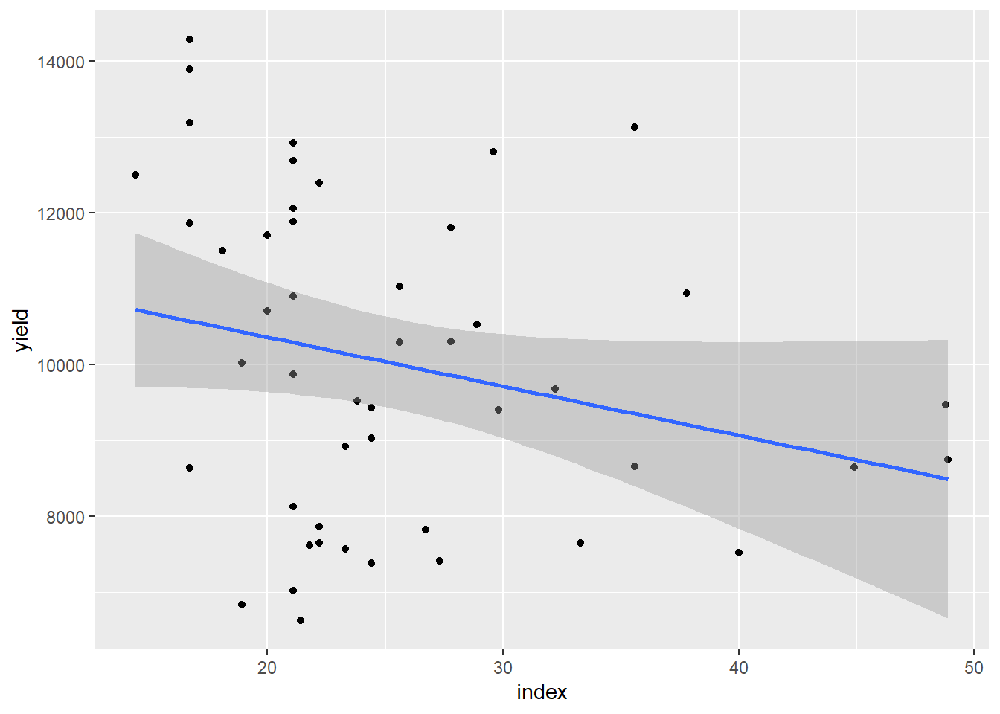

library(ggplot2)
library(dplyr)
library(DHARMa)
library(multcomp)
# Carregar os dados da nuvem
library(gsheet)
milho <- gsheet2tbl ("https://docs.google.com/spreadsheets/d/1bq2N19DcZdtax2fQW9OHSGMR0X2__Z9T/edit?gid=1345524759#gid=1345524759")
# Visualizando os dados: gráfico de dispersão com 'hybrid' no eixo X, 'index' no eixo Y e cores diferenciadas por 'method'
milho |>
ggplot(aes(hybrid, index, color = method)) +
geom_jitter(width = 0.1) + # Adiciona dispersão nos pontos para facilitar a visualização
coord_flip() + # Inverte os eixos X e Y
facet_wrap(~ method) # Cria facetas (subgráficos) para cada valor de 'method'# Instalar e carregar o pacote lme4 para usar modelos mistos
install.packages("lme4") pacote 'lme4' desempacotado com sucesso e somas MD5 verificadas
Os pacotes binários baixados estão em
C:\Users\Public\Documents\Wondershare\CreatorTemp\RtmpkPRwJH\downloaded_packageslibrary(lme4)
# Criando a variável de interação entre 'hybrid' e 'block'
milho$hybrid_block <- interaction(milho$hybrid, milho$block) # Cria uma nova variável que representa a interação entre híbrido e bloco
# Outra forma de criar a interação 'hybrid' e 'block'
milho |>
mutate(hybrid_block = interaction(hybrid, block)) # Criação da interação com mutate, que também adiciona essa variável ao dataframe# A tibble: 48 × 6
hybrid block method index yield hybrid_block
<chr> <dbl> <chr> <dbl> <dbl> <fct>
1 30F53 HX 1 pin 21.1 12920 30F53 HX.1
2 30F53 HX 2 pin 21.1 9870 30F53 HX.2
3 30F53 HX 3 pin 23.3 8920 30F53 HX.3
4 30F53 HX 4 pin 35.6 13120 30F53 HX.4
5 30F53 YH 1 pin 21.1 12060 30F53 YH.1
6 30F53 YH 2 pin 22.2 7860 30F53 YH.2
7 30F53 YH 3 pin 27.3 7410 30F53 YH.3
8 30F53 YH 4 pin 27.8 10300 30F53 YH.4
9 30K64 1 pin 20 11700 30K64.1
10 30K64 2 pin 20 10700 30K64.2
# ℹ 38 more rows# Ajustando o modelo misto para analisar 'index' com os fatores 'hybrid' e 'method', considerando blocos como um efeito aleatório
m_milho <- lmer(index ~ hybrid * method +
(1 | block:hybrid_block), # Bloco dentro da interação híbrido-bloco
data = milho)
# Exibindo a ANOVA do modelo
car::Anova(m_milho) # 'car::Anova' é usado para uma ANOVA mais detalhada com modelos lineares e mistosAnalysis of Deviance Table (Type II Wald chisquare tests)
Response: index
Chisq Df Pr(>Chisq)
hybrid 11.4239 5 0.04359 *
method 4.6964 1 0.03023 *
hybrid:method 15.8062 5 0.00742 **
---
Signif. codes: 0 '***' 0.001 '**' 0.01 '*' 0.05 '.' 0.1 ' ' 1# Visualizando os resíduos do modelo para verificar a normalidade e homogeneidade das variâncias
plot(simulateResiduals(m_milho)) # Usando DHARMa para verificar os resíduos do modelo
# Estimativas das médias ajustadas para cada 'hybrid' dentro de cada 'method'
library(emmeans) # Pacote para estimativas de médias ajustadas
media_milho <- emmeans(m_milho, ~ hybrid | method) # Calculando as médias ajustadas para 'hybrid' dentro de cada 'method'
cld(media_milho, Letters = letters) # Exibindo as comparações de médias com as letras compactasmethod = pin:
hybrid emmean SE df lower.CL upper.CL .group
BG7049H 19.4 3.57 24.9 12.1 26.8 a
30K64 20.6 3.57 24.9 13.2 27.9 a
30F53 YH 24.6 3.57 24.9 17.3 31.9 ab
30F53 HX 25.3 3.57 24.9 17.9 32.6 ab
30S31YH 32.5 3.57 24.9 25.2 39.8 ab
30S31H 38.1 3.57 24.9 30.8 45.4 b
method = silk:
hybrid emmean SE df lower.CL upper.CL .group
BG7049H 19.2 3.57 24.9 11.8 26.5 a
30K64 21.5 3.57 24.9 14.2 28.8 a
30F53 HX 25.0 3.57 24.9 17.7 32.3 a
30F53 YH 26.2 3.57 24.9 18.9 33.6 a
30S31H 26.5 3.57 24.9 19.2 33.8 a
30S31YH 26.6 3.57 24.9 19.3 34.0 a
Degrees-of-freedom method: kenward-roger
Confidence level used: 0.95
P value adjustment: tukey method for comparing a family of 6 estimates
significance level used: alpha = 0.05
NOTE: If two or more means share the same grouping symbol,
then we cannot show them to be different.
But we also did not show them to be the same. # Decompondo as médias por 'method' dentro de cada 'hybrid'
media_milho2 <- emmeans(m_milho, ~ method | hybrid) # Calculando as médias ajustadas para 'method' dentro de cada 'hybrid'
cld(media_milho2, Letters = letters) # Exibindo as comparações de médiashybrid = 30F53 HX:
method emmean SE df lower.CL upper.CL .group
silk 25.0 3.57 24.9 17.7 32.3 a
pin 25.3 3.57 24.9 17.9 32.6 a
hybrid = 30F53 YH:
method emmean SE df lower.CL upper.CL .group
pin 24.6 3.57 24.9 17.3 31.9 a
silk 26.2 3.57 24.9 18.9 33.6 a
hybrid = 30K64:
method emmean SE df lower.CL upper.CL .group
pin 20.6 3.57 24.9 13.2 27.9 a
silk 21.5 3.57 24.9 14.2 28.8 a
hybrid = 30S31H:
method emmean SE df lower.CL upper.CL .group
silk 26.5 3.57 24.9 19.2 33.8 a
pin 38.1 3.57 24.9 30.8 45.4 b
hybrid = 30S31YH:
method emmean SE df lower.CL upper.CL .group
silk 26.6 3.57 24.9 19.3 34.0 a
pin 32.5 3.57 24.9 25.2 39.8 a
hybrid = BG7049H:
method emmean SE df lower.CL upper.CL .group
silk 19.2 3.57 24.9 11.8 26.5 a
pin 19.4 3.57 24.9 12.1 26.8 a
Degrees-of-freedom method: kenward-roger
Confidence level used: 0.95
significance level used: alpha = 0.05
NOTE: If two or more means share the same grouping symbol,
then we cannot show them to be different.
But we also did not show them to be the same. # Realizando a análise com a ANOVA sem considerar o modelo de parcelas subdivididas (não recomendado)
m_milho3 <- lm(index ~ hybrid * method + block, data = milho) # Modelo linear simples, sem efeito aleatório
plot(simulateResiduals(m_milho3)) # Visualizando os resíduos para este modelo simplificado# Agora, analisando a produtividade (yield) em vez do índice
m_milho <- lmer(yield ~ hybrid * method +
(1 | block:hybrid_block), # Mantendo a interação entre blocos e híbridos
data = milho)
# Exibindo a ANOVA para o modelo de produtividade
car::Anova(m_milho) # Exibe a ANOVA para o modelo ajustadoAnalysis of Deviance Table (Type II Wald chisquare tests)
Response: yield
Chisq Df Pr(>Chisq)
hybrid 22.5966 5 0.0004031 ***
method 0.1052 1 0.7456932
hybrid:method 25.9302 5 9.206e-05 ***
---
Signif. codes: 0 '***' 0.001 '**' 0.01 '*' 0.05 '.' 0.1 ' ' 1# Visualizando os resíduos para verificar os pressupostos da ANOVA
plot(simulateResiduals(m_milho)) # Checando os resíduos para produtividade
# Estimativas das médias ajustadas para 'hybrid' dentro de 'method' para a produtividade
media_milho <- emmeans(m_milho, ~ hybrid | method)
cld(media_milho, Letters = letters) # Exibindo as comparações entre os híbridosmethod = pin:
hybrid emmean SE df lower.CL upper.CL .group
30S31YH 7836 798 21.1 6177 9495 a
30S31H 8118 798 21.1 6459 9777 a
30F53 YH 9408 798 21.1 7748 11067 ab
30F53 HX 11208 798 21.1 9548 12867 ab
30K64 11675 798 21.1 10016 13334 b
BG7049H 11970 798 21.1 10311 13629 b
method = silk:
hybrid emmean SE df lower.CL upper.CL .group
30S31YH 8277 798 21.1 6618 9936 a
30S31H 9185 798 21.1 7526 10844 a
30F53 YH 9211 798 21.1 7552 10870 a
30F53 HX 9988 798 21.1 8328 11647 ab
30K64 10361 798 21.1 8702 12020 ab
BG7049H 12833 798 21.1 11174 14492 b
Degrees-of-freedom method: kenward-roger
Confidence level used: 0.95
P value adjustment: tukey method for comparing a family of 6 estimates
significance level used: alpha = 0.05
NOTE: If two or more means share the same grouping symbol,
then we cannot show them to be different.
But we also did not show them to be the same. # Estimativas das médias ajustadas para 'method' dentro de 'hybrid' para a produtividade
media_milho2 <- emmeans(m_milho, ~ method | hybrid)
cld(media_milho2, Letters = letters) # Exibindo as comparações entre os métodoshybrid = 30F53 HX:
method emmean SE df lower.CL upper.CL .group
silk 9988 798 21.1 8328 11647 a
pin 11208 798 21.1 9548 12867 b
hybrid = 30F53 YH:
method emmean SE df lower.CL upper.CL .group
silk 9211 798 21.1 7552 10870 a
pin 9408 798 21.1 7748 11067 a
hybrid = 30K64:
method emmean SE df lower.CL upper.CL .group
silk 10361 798 21.1 8702 12020 a
pin 11675 798 21.1 10016 13334 b
hybrid = 30S31H:
method emmean SE df lower.CL upper.CL .group
pin 8118 798 21.1 6459 9777 a
silk 9185 798 21.1 7526 10844 b
hybrid = 30S31YH:
method emmean SE df lower.CL upper.CL .group
pin 7836 798 21.1 6177 9495 a
silk 8277 798 21.1 6618 9936 a
hybrid = BG7049H:
method emmean SE df lower.CL upper.CL .group
pin 11970 798 21.1 10311 13629 a
silk 12833 798 21.1 11174 14492 a
Degrees-of-freedom method: kenward-roger
Confidence level used: 0.95
significance level used: alpha = 0.05
NOTE: If two or more means share the same grouping symbol,
then we cannot show them to be different.
But we also did not show them to be the same. # Analisando a relação entre índice e produtividade (doença e produtividade)
milho |>
ggplot(aes(index, yield)) +
geom_point() + # Gráfico de dispersão entre índice e produtividade
geom_smooth(method = "lm") # Adicionando a linha de tendência com o modelo linear
# Análise de correlação entre 'index' (índice de doença) e 'yield' (produtividade)
cor.test(milho$index, milho$yield) # Testando a correlação entre o índice de doença e a produtividade
Pearson's product-moment correlation
data: milho$index and milho$yield
t = -1.7622, df = 46, p-value = 0.08468
alternative hypothesis: true correlation is not equal to 0
95 percent confidence interval:
-0.49988704 0.03517829
sample estimates:
cor
-0.2514699 # Calculando o coeficiente de correlação e o coeficiente de determinação (R^2)
cor1 <- cor(milho$index, milho$yield) # Calculando o coeficiente de correlação
cor1 * cor1 * 100 # Calculando o coeficiente de determinação (R^2), que mostra a variação de 'yield' explicada por 'index'[1] 6.323713